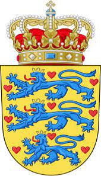

Antavla
24038681 Irmingard Knudsdatter af Danmark
Blev ca 80 år.

Far:
Knud Lavard af Danmark (1096 - 1131)
Mor:
Ingeborg Mstislavnasdotter of Novgorod (Kiev) (1137 - 1217)
Född:
omkring 1137.
Död:
1217.
Barn med
24038680 Stoislav I (1140 - 1194)
Barn:
Borante I of Putbus (1191? - )
Personhistoria
Årtal
Ålder
Händelse
1137
Modern
48077363 Prinsessan Ingeborg Mstislavnasdotter of Novgorod (Kiev)
föds 1137
1137?
Födelse omkring 1137
1140
Partnern
24038680 Stoislav I
föds 1140 Tyskland
1182
Halvbrodern
8176051598 Kung Valdemar I Knudsen (den store)
dör 1182 Vordingborg, Danmark
[1]
1191?
Sonen
12019340 Borante I of Putbus
föds omkring 1191
1194
Partnern
24038680 Stoislav I
dör 1194
1217?
Barnbarnet
6009670 Stoislav II of Wilmnitz
föds omkring 1217
1217
Död 1217
1217
Modern
48077363 Prinsessan Ingeborg Mstislavnasdotter of Novgorod (Kiev)
dör 1217
Källor
[1]
Anette Guldager Boye